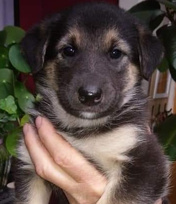
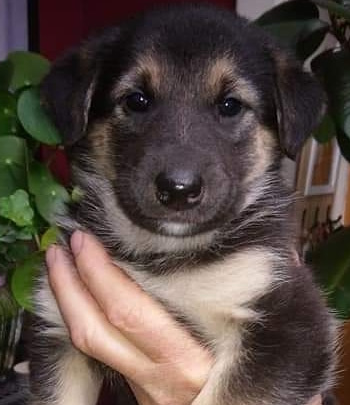

Mijn hobby's
Met mijn motor rijden.
Als het mooi weer is durf ik me al eens aan een ritje wagen met mijn motor. Ik rij het liefst ergens waar het rustig is, mogelijks met wat natuur, dat vindt ik echt genieten. Mijn vrouw is zo geen fan van mijn motor maar mijn dochter rijdt maar al te graag mee. Natuurlijk profiteren wij hiervan en gaan dan al eens een ijsje eten.
Darts
In mijn vrije tijd speel ik soms darts. Niet dat ik erg goed ben maar ik vind het gewoon leuk. Zo komen er geregeld vrienden meedoen, uiteraard ga ik ook bij hen al eens een pijltje gooien. Dan maken we er een gezellige bezigheid van.
Relaxed fietsen
Mijn vrouw en ik bezitten een elektrische fiets, deze hebben we nog maar recent aangekocht. Als het mooi weer is, ga je ons vooral terugvinden in de natuur. Meestal is dat ergens in onze buurt, aangezien we beschikken over een groene omgeving. Eventjes wat tijd voor onszelf... een ontspannende rit en genieten maar.
Gamen
Af en toe speel ik wel eens een game, meestal is het mij te doen om het sociale aspect. Dit sluit een game met een leuk verhaal natuurlijk niet uit. Eerlijk gezegd kan ik er nu amper tijd voor vinden, desondanks amuseer ik me er wel mee. In het verleden ging ik met vrienden soms naar een lan maar dat is ondertussen eigenlijk lang geleden.
Mijn hond
Mijn hond Noxx is naar mijn mening de beste aankoop van ons gezin in 2019. Ik moet toegeven dat mijn vrouw meer met Noxx gaat wandelen dan ik, maar indien mogelijk ga ik uiteraard mee. Tussendoor is er altijd de gelegenheid om met het balletje te spelen in de tuin.
 
